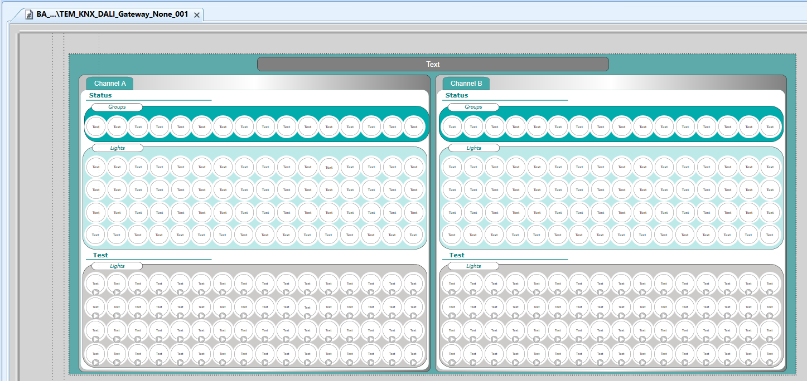
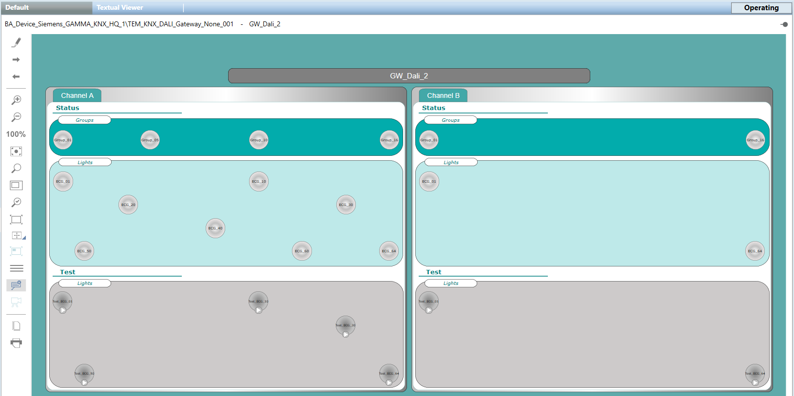
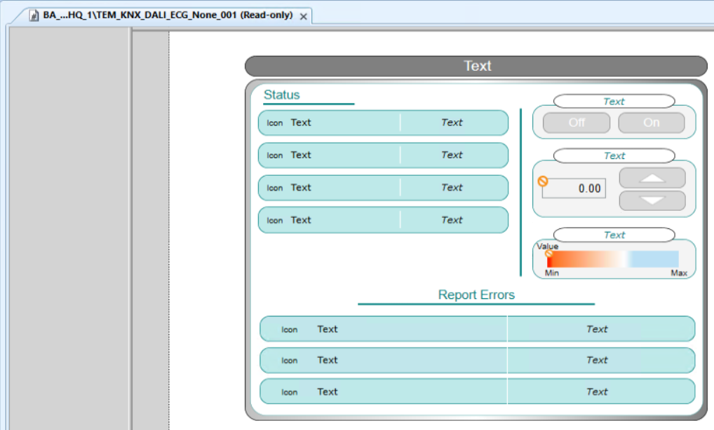
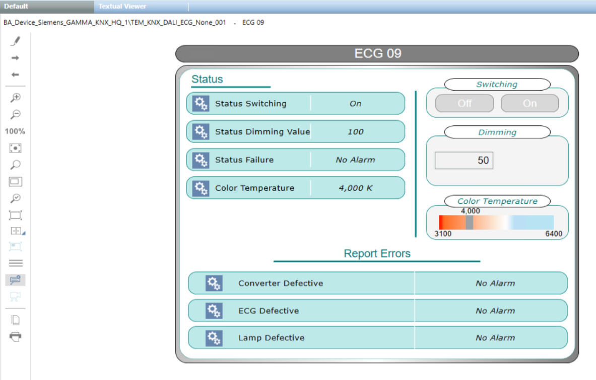
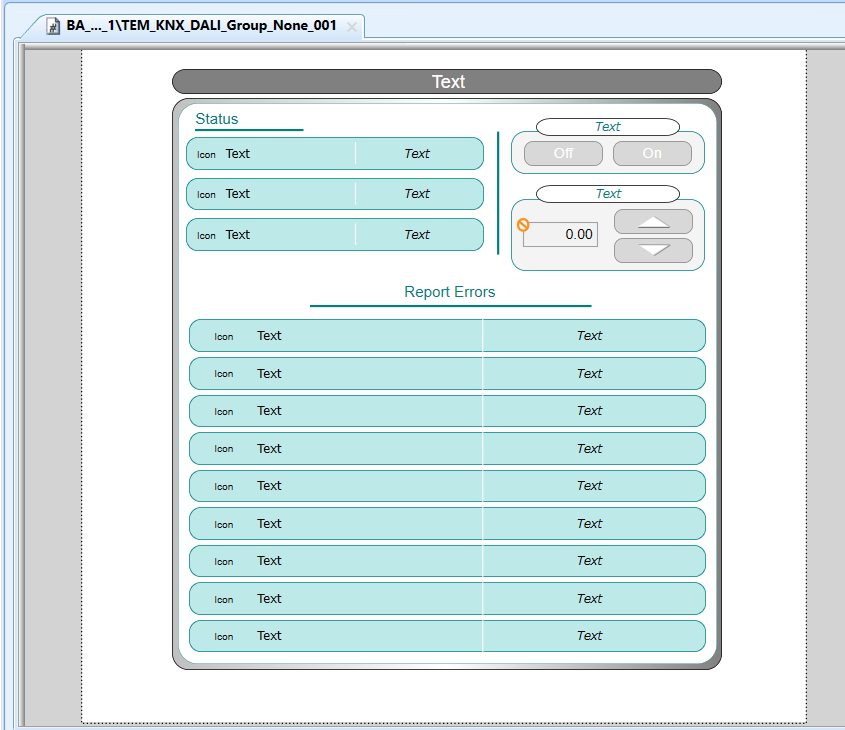
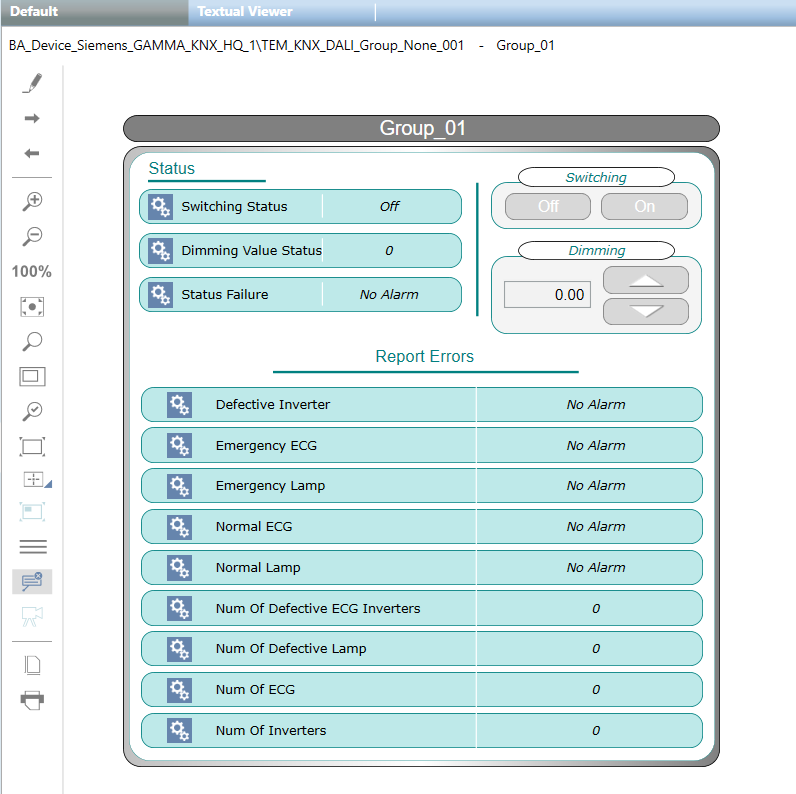
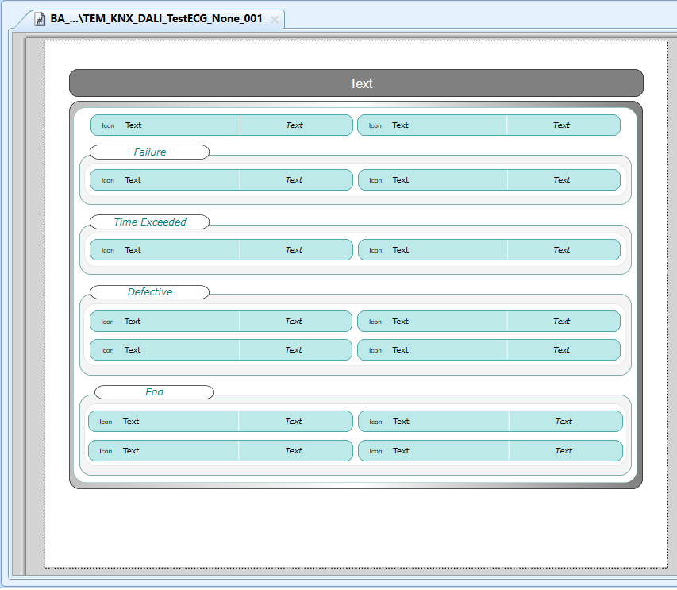
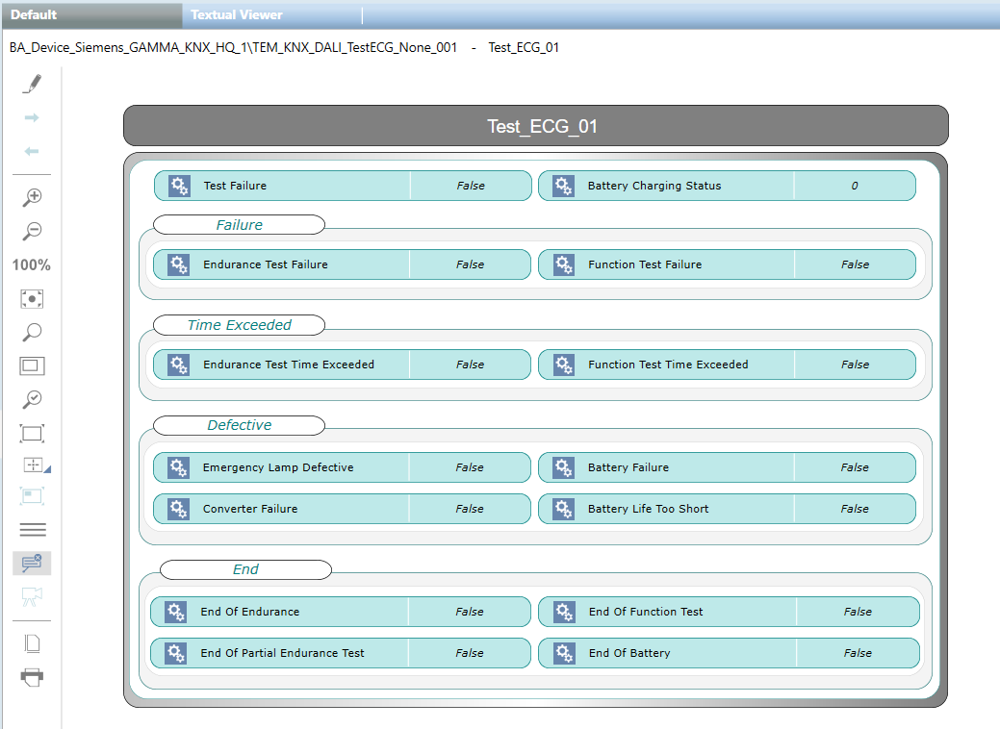
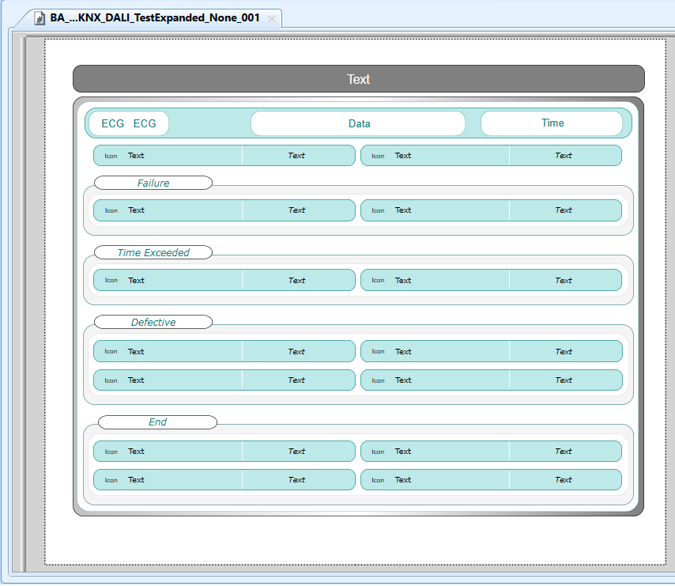
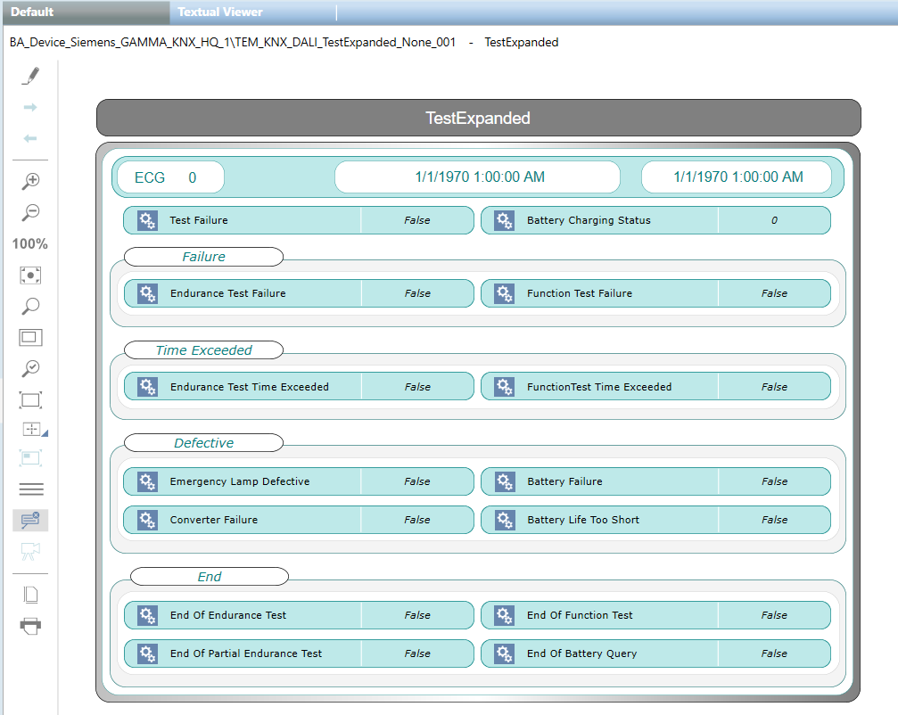

DALI Graphic Templates
The following graphic templates are provided with this integration to graphically represent the DALI building lighting systems.

Mandatory Group Addresses and related COM objects
To have consistent DALI graphic templates and prevent malfunctioning, you must check that the following mandatory Group Addresses and the related COM objects are available and configured in KNX projects:
- Channel: Device Failure
- Group: Switching Status
- ECG: Switching Status
- Test: Test Failure
- Test Expanded: Test Failure
TEM_KNX_DALI_Gateway_None_001
In Engineering mode, this is the graphic template for the DALI gateway.

In Operating mode, this is the graphic for the DALI gateway.

TEM_KNX_DALI_ECG_None_001
In Engineering mode, this is the graphic template for the DALI ECG lamp.

In Operating mode, this is the graphic for the DALI ECG lamp.

TEM_KNX_DALI_Group_None_001
In Engineering mode, this is the graphic template for the DALI lamp group.

In Operating mode, this is the graphic for the DALI lamp group.

TEM_KNX_DALI_TestECG_None_001
In Engineering mode, this is the graphic template for the DALI ECG lamp in test.

In Operating mode, this is the graphic for the DALI ECG lamp in test.

TEM_KNX_DALI_TestExpanded_None_001
In Engineering mode, this is the graphic template for the DALI ECG lamp expanded tests.

In Operating mode, this is the graphic for the DALI ECG lamp expanded tests.
